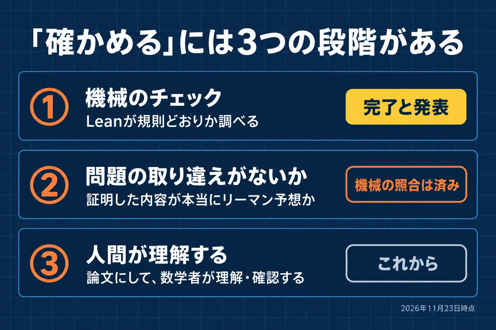

素数を数えてみよう
素数とは、1とその数自身でしか割り切れない2以上の整数のこと。2、3、5、7、11、13……と続く。1から100までの素数を全部書き出すと、次の25個になる。
2, 3, 5, 7, 11, 13, 17, 19, 23, 29, 31, 37, 41, 43, 47, 53, 59, 61, 67, 71, 73, 79, 83, 89, 97
範囲を広げて、素数がどれくらいあるかを見てみよう。
| 100まで | 25個(25%) |
| 1000まで | 168個(16.8%) |
| 1万まで | 1229個(約12.3%) |
| 100万まで | 78498個(約7.8%) |
大きい数になるほど、素数はまばらになっていく。しかも、素数がどこに出てくるかは、一見でたらめに見える。
1〜10、11〜20、21〜30……と、10ずつに区切って、それぞれの中に素数が何個あるか数えてみよう。同じ個数になるだろうか。
答え合わせ：4、4、2、2、3、2、2、3、2、1個(合計25個)。
リーマン予想は、何を言っているのか
でたらめに見える素数の並びにも、実は大きな「くせ」がある。N までに素数が何個あるかは、ある計算式を使うと、かなり正確に見積もれるのだ(高校では習わない「対数積分」という式)。100万までなら、次のようになる。
| 見積もりの式で求めた個数 | 約78627個 |
| 実際の個数 | 78498個 |
| ズレ | 約129個 |
見積もりは、ほとんど当たっている。それでも、ぴったりとは一致せず、少しだけズレる。リーマン予想は、このズレがどれくらい小さいかについての予想である。
素数の個数の見積もりとのズレは、N の平方根(√N)くらいの大きさにおさまる。
※正確には、√N に少しだけ余裕をもたせた大きさ。
100万の平方根は √1000000 = 1000 で、ズレの約129個は、それよりずっと小さい。1000までなら、見積もりは約177個、実際は168個で、ズレは約9個。√1000 は約32なので、こちらもずっと小さい。
コインを100回投げると、表が出る回数は50回ぴったりにはならず、45〜55回くらいにおさまることが多い。ズレの大きさは、投げた回数の平方根(√100 = 10)の半分、つまり5回くらいだ。素数の個数のズレにも、これとよく似た「ここまでしかズレない」という限界がある、というのがリーマン予想の中身である。
数学者は、この話を、「ゼータ関数」という特別な関数の「0になる場所(零点)」の話に言いかえた。「零点はすべて、ある1本の直線の上にならぶ」——1859年にリーマンが論文に書いた予想がこれである。直線の上にならぶことと、ズレが小さくおさまることは、同じ意味だと知られている。リーマンは「とてもありそうだ」と書いたが、証明は、いくつかの軽い試みのあと、ひとまず脇に置いた。それから167年、だれも証明できなかった。
最初の約10兆個(1013個)の零点を調べた計算(2004年)があり、これまでに見つかった零点は、すべて直線の上にあった。それでも、これは証明ではない。零点は無限にあるからだ。
これは、第4回で見た「たくさん調べることと、証明すること」の違いと同じ話である。
2026年11月、何が発表されたのか
まず、事実を日付の順に整理する(2026年11月23日時点の報道にもとづく)。
- 8月10日 Anthropic(アンソロピック)社が、研究中のAI「Claude」が、零点のうち「直線の上にあると証明できる割合」を、それまでの約41.6%から約67.2%へ引き上げたと発表した。これはリーマン予想そのものの証明ではなかった。
- 11月20日(金) 同社の数学者レベント・アルポーゲさんが、自分のWebサイトで、Claudeといっしょにリーマン予想の証明を見つけたと発表した。証明は、コンピューターで確かめられる「Lean」という形式で公開された。
- 11月21日 Leanと、その数学ライブラリ「Mathlib」のコミュニティが、共同声明で「証明は正しい」と認定した。
いっしょに取り組んだAIは、Anthropic社の「Claude」である。ニュースは「AIが解いた」と大きく伝えたが、何が、どこまで確かめられたのかを分けて見る必要がある。
「正しい」を確かめる、3つの段階
第4回では、「具体例を調べること」「証明すること」「証明を機械で確かめられる形にすること(形式化)」の違いを見た。今回のニュースを読むには、そこからもう一歩進んで、「確かめる」の中に3つの段階があることを知っておくとよい。

- ① 機械のチェック：証明を、数学の規則だけで一歩ずつ確かめるプログラム(Lean)で調べる。Leanのコミュニティは、約1700万行におよぶ証明を、数十人が再現し、複数の独立したチェッカーでも調べて、エラーなく通ったと発表した。
- ② 問題の取り違えがないか：機械が保証するのは「証明が規則どおり」というところまで。証明したことが、本当に「リーマン予想」なのかは、別の確認が必要になる。Leanコミュニティは、証明された内容が、数学ライブラリに書かれたリーマン予想の命題と一致することを、2つの独立したツールで確かめた。さらに、その命題が、一般に言われるリーマン予想の問題文と同じかどうかは、人間の専門家の確認が必要だとされている。
- ③ 人間が理解する：人間が読める形の論文は、まだ公開されていない。報道では、形式証明を文書にすると25万ページを超え、そのままでは読めないという。発表したアルポーゲさん自身も、証明で使われた高度な理論を十分には理解していないと認めたと報じられている。数学者が理解するには、数か月から数年かかるかもしれない、という見方もある。
テストにたとえてみよう。計算はぜんぶ合っている(①)。けれど、問題文を読みまちがえていたら意味がない(②)。そして、「なぜその答えになるのか」を人が説明できなければ、「わかった」とは言いにくい(③)。
数学では、答えが正しいだけでなく、「なぜ正しいか」がわかることが大切だ。理由がわかれば、そこから次の発見が生まれるからである。
時間がかかるのは、なぜか
リーマン予想は、アメリカのクレイ数学研究所が100万ドルの賞金をかけた、7つの問題の1つでもある。ただし、賞金の審査には決まりがある。解答が、専門家の審査(査読)のある専門誌などで公表されてから少なくとも2年が過ぎていること。そして、世界の数学界に広く受け入れられていること。これが条件の一部である。
前の例を見てみよう。同じ賞金問題だったポアンカレ予想は、最初の論文がインターネットに投稿されたのが2002年11月、賞の授与が発表されたのが2010年3月だった。約7年4か月かかっている。
時間がかかるのは、のろいからではない。まちがいを、世界じゅうの専門家の目で、できるだけ確実に取りのぞくための時間である。今回のように機械による確認が先に進んでも、「人間が理解して確かめる」という大事な段階は残っている。
ニュースを読むときのコツ
新しい発表があったときは、「だれが、いつ、何を、どの段階まで確かめたのか」を見ると、成果を正確に読み取れる。「証明を見つけたと発表した」ことと、「証明が正しいと数学界が受け入れた」ことは、同じではない。
- 素数の個数の見積もりとのズレが「√N くらい」とは、どんなことを言っているのだろう。
- 「Leanが通った」だけでは、なぜ「リーマン予想が解けた」と言い切れないのだろう。
- テストの答え合わせにたとえると、①②③はそれぞれ何にあたるだろう。
まとめ
リーマン予想は、素数の個数の見積もりとのズレが小さいことを予想した問題である。2026年11月、AIといっしょに証明を見つけたという発表があり、機械による確認は進んだ。しかし、人間が内容を理解して確かめるのは、これからである。
調べることは予想を生み、証明はすべての場合を論理で示し、その証明が正しいと言えるには、人間の理解の時間もかかる。結果がどうなるかは、これからの確認を見守ろう。
参考資料
ITmedia NEWS「Anthropicの数学者、『Claude』と共同で『リーマン予想』を証明したと主張 Leanコミュニティが『正しい』と認定」2026年11月22日
CNET Japan「リーマン予想の証明、Lean開発者らが『正しい』と声明 Claudeを使って発見」2026年11月
XenoSpectrum「AIによるリーマン予想の証明がLean検証を通過、それでも100万ドルの懸賞金がすぐに支払われない理由」2026年11月
ビジネス+IT「AnthropicのClaudeが、167年未解決の数学最大の難問『リーマン予想』の証明を前進」2026年8月11日
A computational history of prime numbers and Riemann zeros (arXiv:1810.05244)